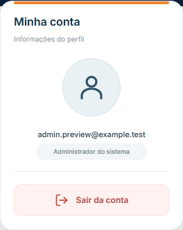
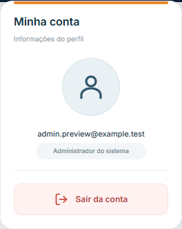
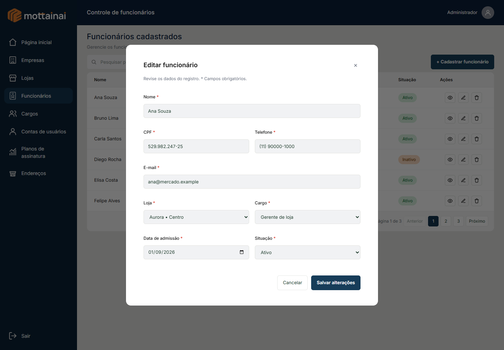
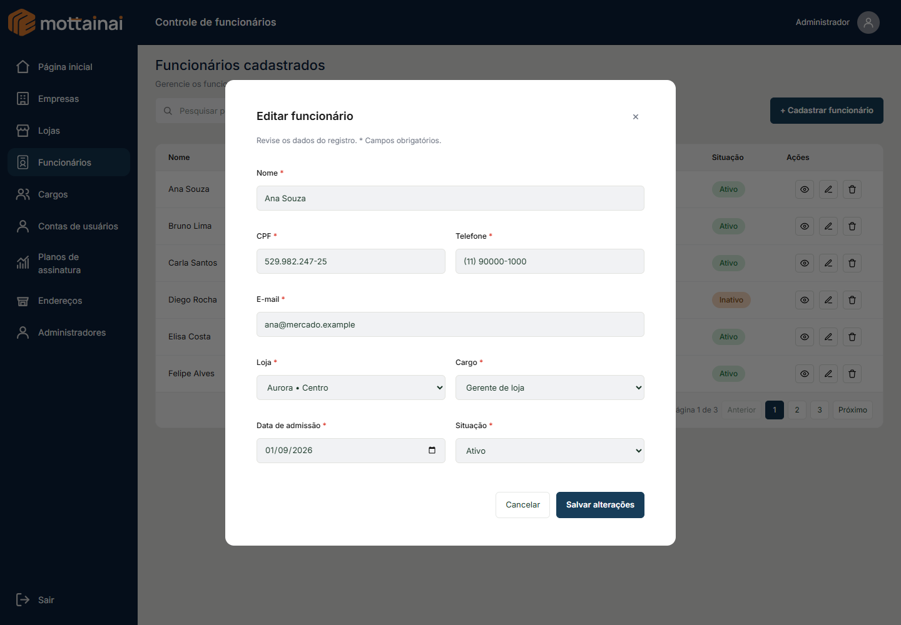
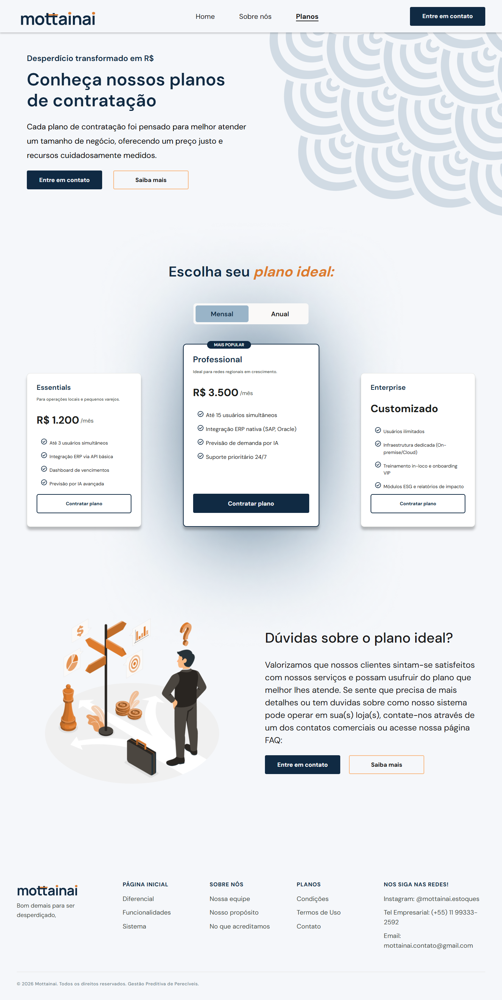
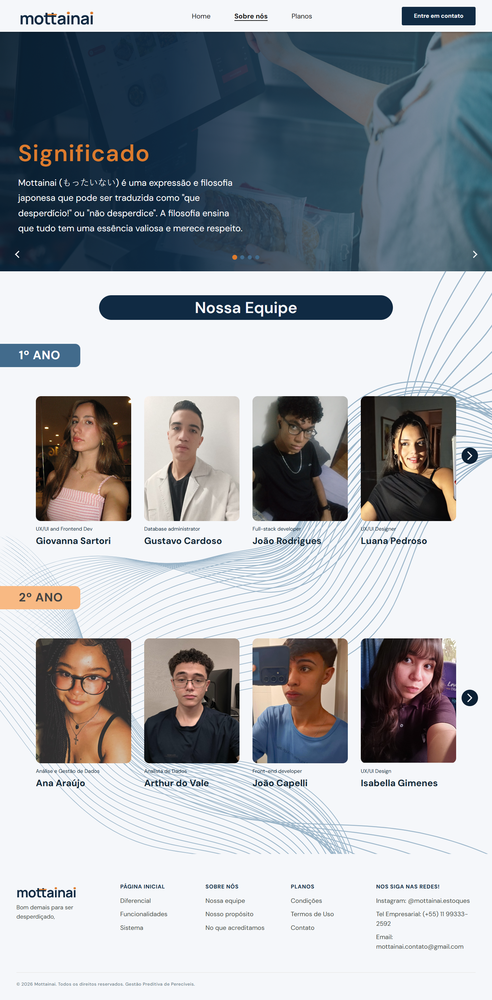
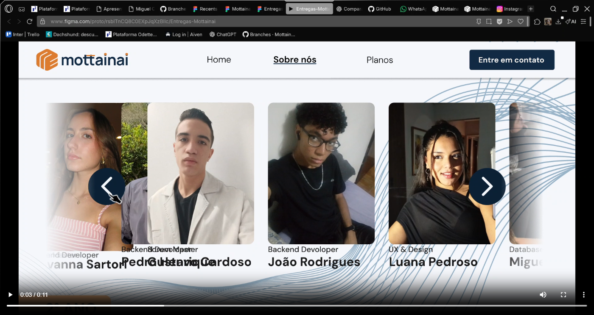

Ajustes específicos — rodada 15
Capturas do código atual. Ativo e paralelo preservam suas diferenças anteriores fora do escopo desta rodada.
Relatório, arquivos e limites da validação · Abrir Home HTML · Abrir Planos HTML · Abrir Sobre Nós HTML · Abrir FAQ HTML
Popup ativo

Popup paralelo

Editar funcionário — ativo

Editar funcionário — paralelo

Home — paralelo
Planos — paralelo

Sobre Nós — desktop

Sobre Nós — mobile
Referência do movimento — vídeo enviado
Instante intermediário inspecionado. A sobreposição de nomes da referência não foi reproduzida; a implementação mantém o deslizamento horizontal.
